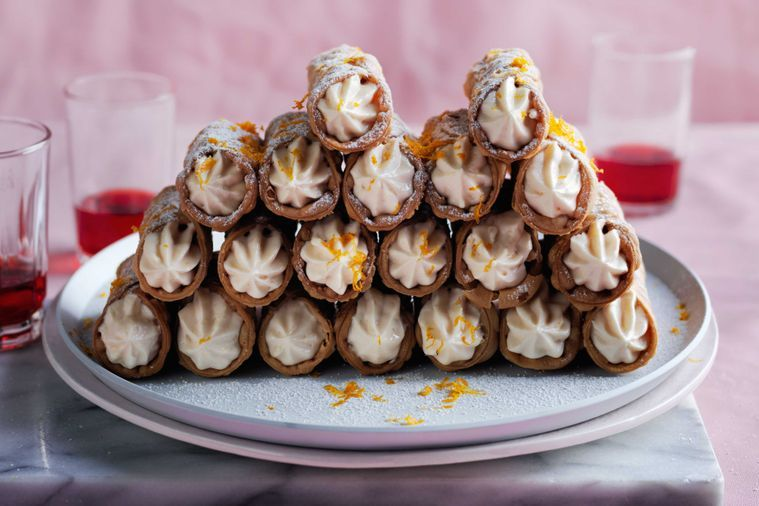

Campari and white chocolate cannoli

Campari and white chocolate cannoli
The perfect pair to that after-dinner Negroni.
Ingredients
- 300g ricotta
- Finely grated zest and juice of 1 small orange
- 1 cup (250g) mascarpone
- 2/3 cup (80g) pure icing sugar, sifted, plus extra to dust
- 2 tbs Campari
- 150g white chocolate, melted, cooled
- 16 cannoli shells (from delis and Italian food shops)
Method
- Place ricotta in a stand mixer fitted with the whisk attachment. Whisk for 2-3 minutes until smooth.
- Add orange juice and half the zest, and whisk to combine. Add mascarpone and sugar and whisk until very thick. Add Campari and chocolate and whisk to combine.
- Transfer mixture to a piping bag fitted with a star nozzle. Pipe filling into cannoli shells. Serve dusted with icing sugar and top with remaining orange zest.